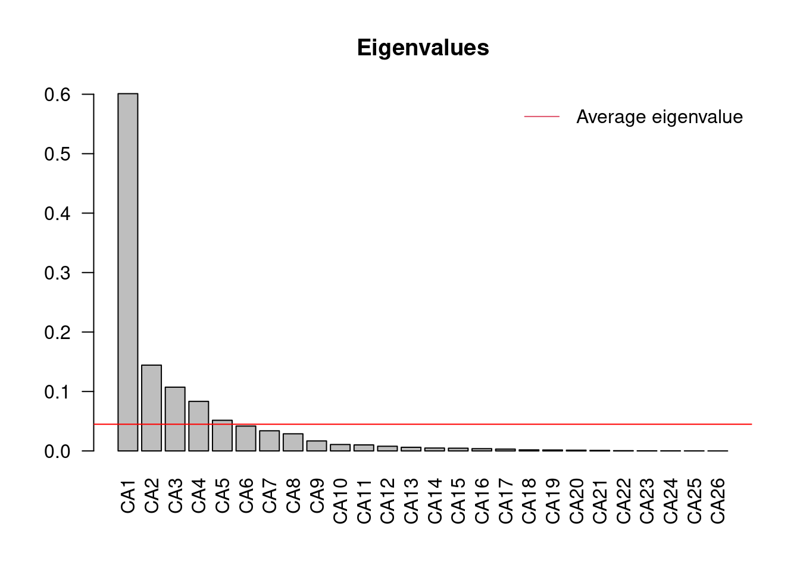
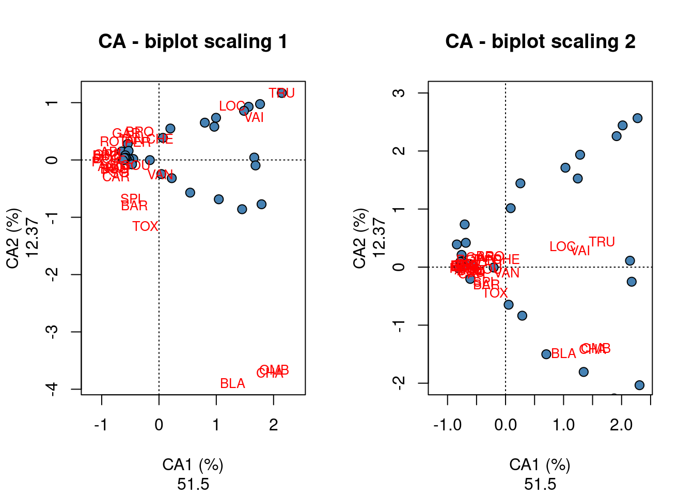
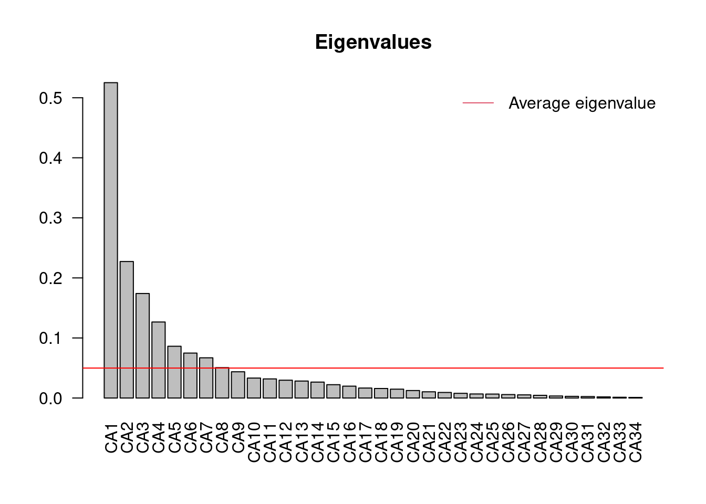
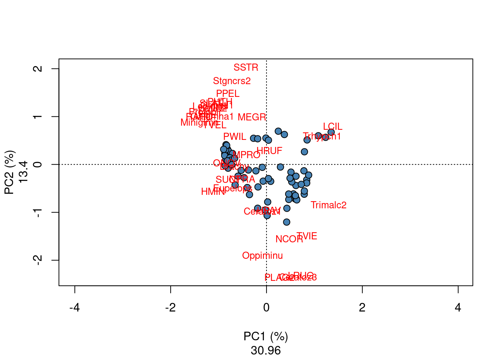

Chapter 14 Correspondence Analysis
One of the key assumptions made in PCA is that species are related to each other linearly and that they respond linearly to ecological gradients. This is not necessarily the case with a lot of ecological data (e.g. many species have unimodal species distributions). Using PCA on data with unimodal species distributions or a lot of zero values may lead to a phenomenon called the “horseshoe effect”, and can occur with long ecological gradients. As such, a CA or Correspondence Analysis may be a better option for this type of data, see Legendre and Legendre (2012) for further information. As CA preserves Chi2 distances (while PCA preserves Euclidean distances), this technique is indeed better suited to ordinate datasets containing unimodal species distributions, and has, for a long time, been one of the favourite tools for the analysis of species presence–absence or abundance data. In CA, the raw data are first transformed into a matrix Q of cell-by-cell contributions to the Pearson Chi2 statistic, and the resulting table is submitted to a singular value decomposition to compute its eigenvalues and eigenvectors. The result is an ordination, where it is the Chi2 distance that is preserved among sites instead of the Euclidean distance in PCA. The Chi2 distance is not influenced by the double zeros. Therefore, CA is a method adapted to the analysis of species abundance data without pre-transformation. Contrary to PCA, CA can also be applied to analyze both quantitative and binary data (such as species abundances or absence/presence). As in PCA, the Kaiser-Guttman criterion can be applied to determine the significant axes of a CA, and ordination axes can be extracted to be used in multiples regressions.
Run a CA on species data:
# Run the CA using the cca() function (NB: cca() is used
# for both CA and CCA)
spe.ca <- cca(spe[-8, ])
# Identify the significant axes
ev <- spe.ca$CA$eig
ev[ev > mean(ev)]## CA1 CA2 CA3 CA4 CA5
## 0.60099264 0.14437089 0.10729384 0.08337321 0.05157826n = length(ev)
barplot(ev, main = "Eigenvalues", col = "grey", las = 2)
abline(h = mean(ev), col = "red")
legend("topright", "Average eigenvalue", lwd = 1, col = 2, bty = "n")
From this barplot, you can see that once you reach C6, the proportion of variance explained falls below the average proportion explained by the other components. If you take another look at the CA summary, you will notice that by the time you reach CA5, the cumulative proportion of variance explained by the principal components is 84.63%.
summary(spe.h.pca) #overall results##
## Call:
## rda(X = spe.hel)
##
## Partitioning of variance:
## Inertia Proportion
## Total 0.5023 1
## Unconstrained 0.5023 1
##
## Eigenvalues, and their contribution to the variance
##
## Importance of components:
## PC1 PC2 PC3 PC4 PC5 PC6 PC7
## Eigenvalue 0.2491 0.06592 0.04615 0.03723 0.02125 0.01662 0.01477
## Proportion Explained 0.4959 0.13122 0.09188 0.07412 0.04230 0.03309 0.02940
## Cumulative Proportion 0.4959 0.62715 0.71903 0.79315 0.83544 0.86853 0.89794
## PC8 PC9 PC10 PC11 PC12 PC13
## Eigenvalue 0.01297 0.01054 0.006666 0.00504 0.004258 0.002767
## Proportion Explained 0.02582 0.02098 0.013269 0.01003 0.008477 0.005507
## Cumulative Proportion 0.92376 0.94474 0.958011 0.96804 0.976521 0.982029
## PC14 PC15 PC16 PC17 PC18 PC19
## Eigenvalue 0.002612 0.001505 0.001387 0.001037 0.0007815 0.0004749
## Proportion Explained 0.005200 0.002996 0.002761 0.002065 0.0015557 0.0009454
## Cumulative Proportion 0.987229 0.990225 0.992986 0.995051 0.9966069 0.9975523
## PC20 PC21 PC22 PC23 PC24
## Eigenvalue 0.0004263 0.0002812 0.0002188 0.0001382 0.0000876
## Proportion Explained 0.0008487 0.0005598 0.0004356 0.0002752 0.0001744
## Cumulative Proportion 0.9984010 0.9989608 0.9993965 0.9996717 0.9998460
## PC25 PC26 PC27
## Eigenvalue 5.336e-05 1.476e-05 9.216e-06
## Proportion Explained 1.062e-04 2.938e-05 1.835e-05
## Cumulative Proportion 1.000e+00 1.000e+00 1.000e+00
##
## Scaling 2 for species and site scores
## * Species are scaled proportional to eigenvalues
## * Sites are unscaled: weighted dispersion equal on all dimensions
## * General scaling constant of scores: 1.953663
##
##
## Species scores
##
## PC1 PC2 PC3 PC4 PC5 PC6
## CHA 0.17113 0.08669 -0.060772 0.2536941 -0.027774 0.0129709
## TRU 0.64097 0.02193 -0.232895 -0.1429053 -0.059150 0.0013299
## VAI 0.51106 0.19774 0.165053 0.0203364 0.105582 0.1226508
## LOC 0.38002 0.22219 0.235145 -0.0344577 0.126570 0.0570437
## OMB 0.16679 0.06494 -0.087248 0.2444247 0.016349 0.0537362
## BLA 0.07644 0.14707 -0.041152 0.2304754 -0.104984 -0.0424943
## HOT -0.18392 0.05238 -0.042963 0.0222676 0.071349 0.0299974
## TOX -0.14601 0.17844 -0.029561 0.0622957 -0.002615 -0.0839282
## VAN -0.11487 0.18186 0.125113 -0.0190457 -0.197543 0.0253735
## CHE -0.09792 -0.08873 0.281887 0.1094447 0.027418 -0.0153611
## BAR -0.19770 0.21144 -0.072035 0.0956702 0.005739 -0.0309983
## SPI -0.17618 0.16158 -0.048527 0.0387172 0.031417 -0.0535635
## GOU -0.23096 0.12248 0.062575 -0.0025267 -0.144007 0.1420702
## BRO -0.15129 0.14242 0.028378 -0.1206878 -0.096488 0.0729418
## PER -0.15699 0.19145 0.034700 -0.0969487 -0.041512 -0.0483958
## BOU -0.22734 0.13581 -0.074011 -0.0111431 0.080027 -0.0019656
## PSO -0.22670 0.08348 -0.067212 0.0198179 0.063237 0.0144138
## ROT -0.19113 0.03578 -0.007672 -0.0724430 -0.070206 0.0686039
## CAR -0.18609 0.13050 -0.063693 0.0005777 0.039554 -0.0284575
## TAN -0.19138 0.17582 0.094398 -0.0867317 0.010912 -0.0851924
## BCO -0.20055 0.08332 -0.074787 -0.0504875 0.073890 0.0249842
## PCH -0.14626 0.05268 -0.072012 -0.0432572 0.050318 0.0178776
## GRE -0.29970 -0.01158 -0.069047 -0.0118488 0.029937 0.1407698
## GAR -0.35085 -0.09353 0.198664 0.0178669 0.023796 -0.0971362
## BBO -0.24167 0.03598 -0.079528 -0.0339049 0.096690 0.0620979
## ABL -0.42269 -0.22879 0.007158 0.1128353 0.006759 0.1248913
## ANG -0.20521 0.11557 -0.072060 -0.0159902 0.072030 -0.0003801
##
##
## Site scores (weighted sums of species scores)
##
## PC1 PC2 PC3 PC4 PC5 PC6
## 1 0.370801 -0.49113 -1.018411 -0.58387 -0.491672 -0.622062
## 2 0.507019 -0.05688 -0.175969 -0.42418 0.407790 0.160725
## 3 0.464652 0.02937 -0.067360 -0.49566 0.324339 0.313053
## 4 0.299434 0.19037 0.241315 -0.54538 0.009838 0.197974
## 5 -0.003672 0.13483 0.515723 -0.53640 -0.796183 -0.208554
## 6 0.212943 0.16142 0.538108 -0.44366 -0.138553 -0.066196
## 7 0.440596 -0.01853 0.174782 -0.31336 0.171713 0.131172
## 8 0.032182 -0.53492 -0.354289 -0.07870 -0.125287 -0.632592
## 9 0.040265 -0.33590 0.937036 0.06715 0.610763 -0.828040
## 10 0.299210 0.06061 0.564573 -0.12200 -0.091261 0.461350
## 11 0.470590 -0.10233 -0.100020 0.31166 0.343997 0.217288
## 12 0.479878 -0.05742 -0.117576 0.30965 0.375923 0.191067
## 13 0.486974 0.03698 -0.429138 0.55813 0.050055 0.110758
## 14 0.373684 0.16616 -0.209667 0.63367 -0.181029 0.289613
## 15 0.277984 0.25815 0.075162 0.61382 -0.490132 0.026548
## 16 0.076037 0.48507 0.102428 0.32702 -0.598708 -0.551888
## 17 -0.056099 0.44027 -0.008316 0.42040 -0.063619 -0.422902
## 18 -0.138360 0.40056 0.006109 0.39558 -0.005006 -0.202673
## 19 -0.273219 0.33436 0.144602 0.08318 0.176567 0.023573
## 20 -0.383501 0.21441 0.030917 -0.03750 0.161033 -0.009409
## 21 -0.414203 0.22676 -0.110283 -0.12803 0.156309 0.088863
## 22 -0.448647 0.16664 -0.159017 -0.12942 0.103049 -0.008044
## 23 -0.244257 -1.03990 0.345313 0.42836 0.062931 -0.378721
## 24 -0.361605 -0.78826 -0.007626 0.30578 0.222002 0.528274
## 25 -0.328522 -0.56914 0.211636 0.02271 -1.012465 0.829481
## 26 -0.446605 0.02551 -0.126306 -0.13538 0.213013 0.226330
## 27 -0.449471 0.11911 -0.170655 -0.13637 0.182680 0.072495
## 28 -0.451333 0.11548 -0.200522 -0.14906 0.242752 0.055270
## 29 -0.360249 0.26693 -0.299234 -0.01005 0.120624 0.101802
## 30 -0.472505 0.16141 -0.333315 -0.20807 0.058535 -0.094556# summary(spe.h.pca, diplay=NULL)# only axis eigenvalues
# and contributionCA results are presented in a similar manner as PCA results. You can see here that CA1 explains 51.50% of the variation in species abundances, while CA2 explain 12.37% of the variation.
par(mfrow = c(1, 2))
#### scaling 1
plot(spe.ca, scaling = 1, type = "none", main = "CA - biplot scaling 1",
xlab = c("CA1 (%)", round((spe.ca$CA$eig[1]/sum(spe.ca$CA$eig)) *
100, 2)), ylab = c("CA2 (%)", round((spe.ca$CA$eig[2]/sum(spe.ca$CA$eig)) *
100, 2)))
points(scores(spe.ca, display = "sites", choices = c(1, 2), scaling = 1),
pch = 21, col = "black", bg = "steelblue", cex = 1.2)
text(scores(spe.ca, display = "species", choices = c(1), scaling = 1),
scores(spe.ca, display = "species", choices = c(2), scaling = 1),
labels = rownames(scores(spe.ca, display = "species", scaling = 1)),
col = "red", cex = 0.8)
#### scaling 2
plot(spe.ca, scaling = 1, type = "none", main = "CA - biplot scaling 2",
xlab = c("CA1 (%)", round((spe.ca$CA$eig[1]/sum(spe.ca$CA$eig)) *
100, 2)), ylab = c("CA2 (%)", round((spe.ca$CA$eig[2]/sum(spe.ca$CA$eig)) *
100, 2)), ylim = c(-2, 3))
points(scores(spe.ca, display = "sites", choices = c(1, 2), scaling = 2),
pch = 21, col = "black", bg = "steelblue", cex = 1.2)
text(scores(spe.ca, display = "species", choices = c(1), scaling = 2),
scores(spe.ca, display = "species", choices = c(2), scaling = 2),
labels = rownames(scores(spe.ca, display = "species", scaling = 2)),
col = "red", cex = 0.8)
These biplots show that a group of sites located in the left part with similar fish community characterized by numerous species such as GAR, TAN, PER, ROT, PSO and CAR; in the upper right corner, an other site cluster characterized by the species LOC, VAI and TRU is identified; the last site cluster in the lower right corner of the biplot is characterized by the species BLA, CHA and OMB.
Challenge 4 Run a CA of the “mite” species abundance data. What are the significant axes of variation? Which groups of sites can you identify? Which species are related to each group of sites?
Challenge 4 - Solution
# CA on mite species
mite.spe <- mite
mite.spe.ca <- cca(mite.spe)
# What are the significant axes ?
ev <- mite.spe.ca$CA$eig
ev[ev > mean(ev)]## CA1 CA2 CA3 CA4 CA5 CA6 CA7
## 0.52511362 0.22727580 0.17401743 0.12661241 0.08621687 0.07484890 0.06694738
## CA8
## 0.05061316n = length(ev)
barplot(ev, main = "Eigenvalues", col = "grey", las = 2)
abline(h = mean(ev), col = "red")
legend("topright", "Average eigenvalue", lwd = 1, col = 2, bty = "n")
# Output summary/results
summary(mite.spe.ca, display = NULL)##
## Call:
## cca(X = mite.spe)
##
## Partitioning of scaled Chi-square:
## Inertia Proportion
## Total 1.696 1
## Unconstrained 1.696 1
##
## Eigenvalues, and their contribution to the scaled Chi-square
##
## Importance of components:
## CA1 CA2 CA3 CA4 CA5 CA6 CA7
## Eigenvalue 0.5251 0.2273 0.1740 0.12661 0.08622 0.07485 0.06695
## Proportion Explained 0.3096 0.1340 0.1026 0.07465 0.05083 0.04413 0.03947
## Cumulative Proportion 0.3096 0.4436 0.5462 0.62088 0.67171 0.71584 0.75532
## CA8 CA9 CA10 CA11 CA12 CA13 CA14
## Eigenvalue 0.05061 0.04373 0.03323 0.03184 0.02970 0.02830 0.02652
## Proportion Explained 0.02984 0.02578 0.01959 0.01877 0.01751 0.01668 0.01564
## Cumulative Proportion 0.78516 0.81094 0.83054 0.84931 0.86682 0.88350 0.89914
## CA15 CA16 CA17 CA18 CA19 CA20
## Eigenvalue 0.02224 0.01978 0.016598 0.015868 0.014777 0.012515
## Proportion Explained 0.01311 0.01166 0.009787 0.009356 0.008713 0.007379
## Cumulative Proportion 0.91226 0.92392 0.933705 0.943061 0.951774 0.959153
## CA21 CA22 CA23 CA24 CA25 CA26
## Eigenvalue 0.010378 0.009262 0.007844 0.006765 0.006606 0.005757
## Proportion Explained 0.006119 0.005461 0.004625 0.003989 0.003895 0.003394
## Cumulative Proportion 0.965272 0.970733 0.975358 0.979347 0.983242 0.986636
## CA27 CA28 CA29 CA30 CA31 CA32
## Eigenvalue 0.005236 0.004512 0.003406 0.002828 0.002486 0.001867
## Proportion Explained 0.003087 0.002661 0.002008 0.001667 0.001466 0.001101
## Cumulative Proportion 0.989723 0.992384 0.994392 0.996059 0.997525 0.998625
## CA33 CA34
## Eigenvalue 0.0012956 0.0010357
## Proportion Explained 0.0007639 0.0006106
## Cumulative Proportion 0.9993894 1.0000000
##
## Scaling 2 for species and site scores
## * Species are scaled proportional to eigenvalues
## * Sites are unscaled: weighted dispersion equal on all dimensions# Plot the biplot
plot(mite.spe.ca, scaling = 1, type = "none", xlab = c("PC1 (%)",
round((mite.spe.ca$CA$eig[1]/sum(mite.spe.ca$CA$eig)) * 100,
2)), ylab = c("PC2 (%)", round((mite.spe.ca$CA$eig[2]/sum(mite.spe.ca$CA$eig)) *
100, 2)))
points(scores(mite.spe.ca, display = "sites", choices = c(1,
2), scaling = 1), pch = 21, col = "black", bg = "steelblue",
cex = 1.2)
text(scores(mite.spe.ca, display = "species", choices = c(1),
scaling = 1), scores(mite.spe.ca, display = "species", choices = c(2),
scaling = 1), labels = rownames(scores(mite.spe.ca, display = "species",
scaling = 1)), col = "red", cex = 0.8)